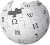

StardadO
Born, Living and working in Berlin, i have lot of interests like travel, networks, family, wikipedia, geocaching, hamradio [do7tc], campervan.
Wikipedia
Born, Living and working in Berlin, i have lot of interests like travel, networks, family, wikipedia, geocaching, hamradio [do7tc], campervan.